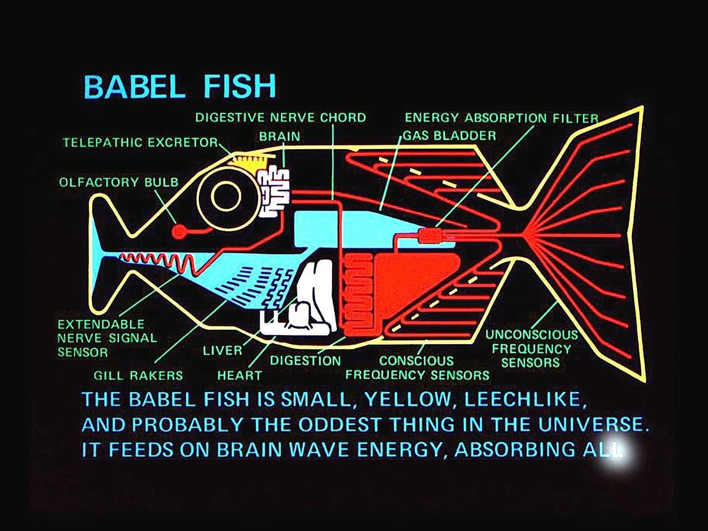
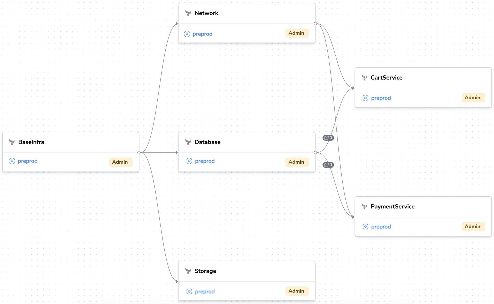

Secure and effective GitOps and Infrastructure-as-Code with OpenTofu
Wojciech Barczynski | VPE@Spacelift | TSC@OpenTofu
Whoami
- VP of Engineering at Spacelift
- Member of OpenTofu TSC
- Before:
Director of Infra/Platform
& Head of Engineering
Whoami
- Infrastructure orchestrator
- IaC GitOps best practices
- Founding partner and top contributor to OpenTofu
What is OpenTofu?
- Community-driven Open-source Terraform fork
- The Linux Foundation project
- Drop-in replacement
- Since September 2023
What is OpenTofu?
- Common language*
- For your cloud, tools, to your software
- Easy to extend (modules, providers, and functions)

Pitfalls ⚠️
- (Remote) state management
- Large stacks & rigid infrastructure
- Running OpenTofu from your machine (Yolo)
- Reusable modules
Pitfalls ⚠️
- Not addressing the drift
- Reviewing every single chance
- Inconsistencies across stacks
- Outgrowing your tooling
3. Running IaC from your laptop

- Uff, luckily it was my test env
- ...
- ...
- 🚨
6. Drift detection
- Catch ClickOps;
- Overlapping IaC configurations;
- Must for the security and control.

7. Policies and Guardrails
Policies with conftest and Rego:
- Warning on deletion or recreation
- Enforce tagging
- Reduce blast radius
- Based on 3rd party tools, e.g., tfsec or checkov.
8. Inconsistencies across stacks
- Model the deps in your pipeline;
- Drift detection;
- terragrunt;
- TACOS.
